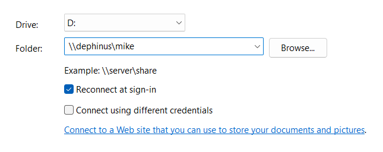
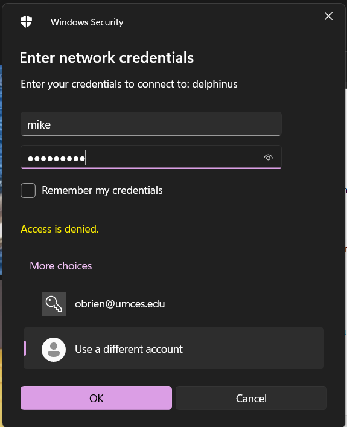
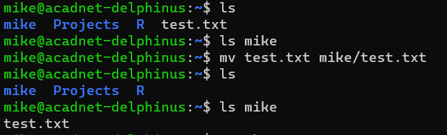
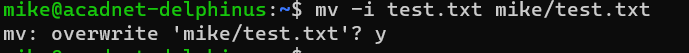
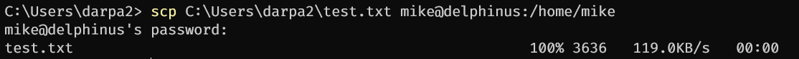

15 File management
15.1 Mapping a network drive
15.1.1 Windows
- Right click “This PC” and select “Map Network Drive”
- Select an unused drive (D: in the picture, but it can be whichever you’d like) and enter
\\delphinus\NAMEOFSHAREfor the folder- Shares are the names of the various users (
mike/jamie/kirsten/etc) anduswind
- Shares are the names of the various users (

- Enter your username and PASSWORD REDACTED as the password. Click “Use a different account” if your username is pre-populated

- You are connected!
- If you would like to move things between shares (directories), you need to repeat this process, mounting (mapping) each directory to a differently-lettered drive
15.1.2 Mac
- To do
15.2 Moving files
15.2.1 GUI (Filezilla)
- To do
15.2.2 CLI
- Use the
mvcommand (“move”) mv from/here.txt to/here.txt

- WARNING! This will automatically overwrite any existing files!
- Use the
-iflag to have the system warn you before copying mv -i from/here.txt to/here.txt
- Use the

15.3 Uploading files
15.3.1 GUI
- To do
15.3.2 CLI
- Use the
scpcommand, which stands for “secure copy protocol”. If you are “ssh-d” into delphinus, log out by typingexitand hittingenter;sshis baked intoscp, and they wind up not working together - If on Windows, type, for example:
scp C:\path\to\file.wav YOURUSERNAME@delphinus:/path/to/copy- Note the change in slash direction!!
- Note that everything is case sensitive!!
- You will be asked for your password, then files are copied (uploaded) to delphinus

- To upload a whole folder, add
-rafterscpand before the file path. Therstands for “recursive”scp -r C:\path\to\directory YOURUSERNAME@delphinus:/path/to/copy
15.4 Downloading files
15.4.1 GUI
- To do
15.4.2 CLI
- Navigate to your file’s directory and type
pwdto find the path to your file - As when uploading, use the
scpcommand, which stands for “secure copy protocol”. If you are “ssh-d” into delphinus, log out by typingexitand hittingenter;sshis baked intoscp, and they wind up not working together. - If on Windows, type:
scp YOURUSERNAME@delphinus:/path/to/filename.docx C:\path\to\copy- Note the change in slash direction!!
- Note that everything is case sensitive!!
- You will be asked for your password, then files are copied (downloaded) to your computer